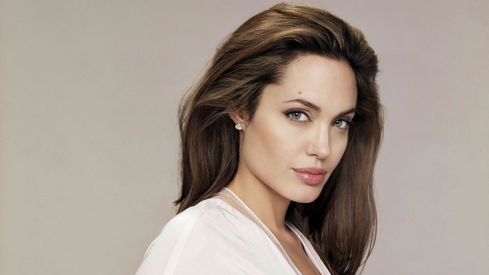
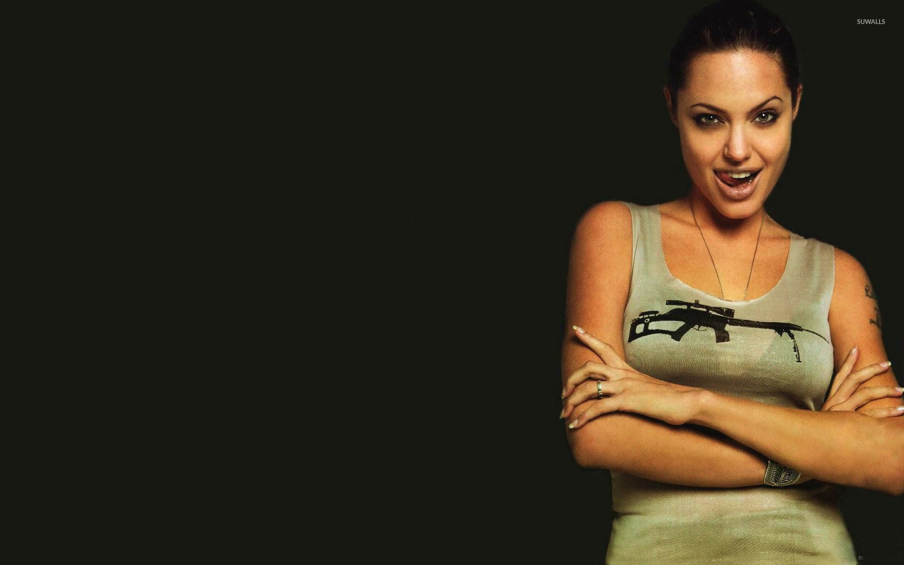
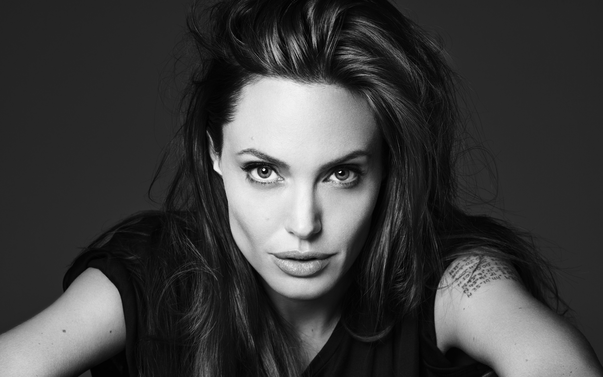

Angelina Jolie
Angelina Jolie, rođena Angelina Jolie Voight (Los Angeles, Kalifornija, 4. lipnja 1975.), američka filmska glumica. Dobitnica je tri Zlatna globusa i Oskara za najbolju sporednu ulogu.
Godine 2006. izabrana je za "najzgodnije slavno tijelo" u izboru E! Television i najljepšu ženu u izboru časopisa "People". Redovito je visoko rangirana na takvim izborima.
UNHCR-ova je veleposlanica dobre volje. S bivšim suprugom Brad Pittom ima troje biološke i troje usvojene djece.
 Rođena je u Los Angelesu, u glumačkoj obitelji. Otac joj je glumac Jon Voight, poznat po filmovima Ponoćni kauboj (1969.) i Povratak veterana (1978.) za kojeg je dobio Oscara, a majka Marcheline Bertrand, bivša manekenka i glumica. Njeni roditelji su se razveli kada je Angelina imala godinu dana. Živjela je s majkom i starijim bratom James Heavenom u New Yorku gdje je s jedanaest pohađala Lee Strasberg Theater Institute.[2] Filmski debut imala je 1982. godine u nezapaženom filmu Lookin to Get Out.
Sa šestnaest godina počela je živjeti sama. Radila je kao model i često se pojavljivala u glazbenim spotovima (Rolling Stones,The Lemonheads, Lenny Kravitz...) i putovala u London, New York i Los Angeles. Kada se preselila u Los Angeles, glumila je u nekoliko studentskih filmova svoga brata i Met Theatru uz Ed Harrisa i Holly Hunter.
Film Hackers (1995.) donio joj je prvu glavnu ulogu, pohvale glumačkom umijeću i Jonny Lee Millera s kojim se vjenčala u nekonvencionalnoj vjenčanici sastavljenoj od crnih kožnih hlača i bijele majice na kojoj je vlastitom krvlju bilo ispisano Millerovo ime.[3][4] Par se razdvojio godinu kasnije, a rastavio 1999. godine.
Nekoliko sljedećih godina Angelina Jolie je glumila u više TV-serija od kojih je za ulogu u filmu George Wallace (1997.) dobila Zlatni globus za najbolju sporednu ulogu, a za ulogu divlje i lijepe Gie Carangi, poznate svjetske manekenke i heroinske ovisnice, u filmu Gia iz 1998.
Na velikom ekranu nije imala toliko uspjeha, ali to se promijenilo 1999. kada se pojavila u filmu Kontrolori leta uz Johna Cusacka, Billy Bob Thorntona i Cate Blanchet, u filmu Sakupljač kostiju uz Denzela Washingtona i u Prekinutoj mladosti u kojem je, glumeći karizmatičnu sociopatsku cimericu Winoni Ryder, dobila treći Zlatni globus i Oscara za najbolju sporednu glumicu.
Za vrijeme snimanja filma Kontrolori leta Angelina Jolie i Billy Bob Thornton ludo su se zaljubili i vjenčali 2000. u Las Vegasu; ona drugi, a on peti put.
Godine 2001. Angelina Jolie je proglašena UN-ovom veleposlanicom dobre volje pa je često obilazila izbjegličke kampove u kriznim i ratom opustošenim područjima Pakistana, Tanzanije, Sierra Leonea. Često sudjeluje i podržava njihove akcije.
Uloge u akcijskim spektaklima obilježile su početak novog tisućljeća. Snimila je, s Nicolasom Cageom adrenalinski akcić Nestali u 60 sekundi (2000.), oživotvorila lik Lare Croft iz legendarne video igrice u filmu Lara Croft: Tomb Rider (2001.) i nastavku Lara Croft Tomb Rider: Kolijevka života (2003.). Nedugo zatim glumila je u filmu "Aleksandar Veliki" (2004.), a potom slijedi snimanje filma Gospodin i gospođa Smith, za snimanja kojeg upoznaje budućeg supruga Brada Pitta.
Par se zbližio već na snimanju filma, pa je Brad Pitt podnio zahtjev za rastavu od "Američke ljubimice" Jennifer Aniston. Uskoro potom, Angeline i Brad su javno priznali i potvrdili svoju vezu i krenuli posvojiti djevojčicu iz Afrike, Zaharu, da bi potom dobili i svoje prvo biološko dijete, Shiloh Nouvel rođenu u Keniji. Kasnije su posvojili malenog Vijetnamca kojem su dali ime Pax.